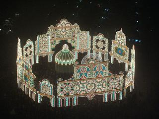

日々、想ふ
〜過去感じたことがつれづれと〜
（できるだけ最大化してお読みください）
日々、想ふ
恒例行事。１２/３１
２００４年〜２００５年の間を縫って更新しています、タケユキです。
ということで新年のカウントダウン＆初詣ってことで
神社に行ってきました。
それにしても２３：５９から０：００になるだけで騒げるってのは珍しいもんですね。
普通の人たちにとって一年に一回だけのお祭りなんだろうけど。
まあ俺や俺と同じ学科の人たちは一ヶ月くらい前にも
２３：５９から０：００になるだけで狂喜乱舞してましたが。
初詣に行った神社、参拝客が多いって話は聞いてたんだけど
人多過ぎ、お前らどこに隠れてた？ってくらい多い。
時間かかったけどお参りもすませ、初詣終了。
あと残すは福袋とセール、これからが新年本番だ。
今日のおみくじ：中吉。
今日の家計簿：
| 覚えてない |
覚えてない円 |
| 支出計 |
覚えてない円 |
| 総支出 |
今年最後だし多めに見てよ円 |
忘年会？１２/３０
広島帰ってきるんですけどやっぱり
三丁目宅にいるんですよね、タケユキです。
今日は広島（市内）に行って遊んで
西条に戻ってきて飯食って飲んで、
三丁目の車で目的地も決めることなくドライブ、
夜の二時とかにドライブ。
三丁目が
調子に乗って好き勝手運転するから
ドライブの途中に車止めて周辺でうだうだやってる間に
置いていかれる人続出。
ガクは
夜の二時に田舎のコンビニに置いてきぼり、
俺にいたっては東広島駅（新幹線駅）に置いてきぼり。
そんな時間に電車は動いてないっての。
なんとか全員拾われて現在（朝４時）
三丁目宅でM-1グランプリを鑑賞中。
ビデオ録ろうとしてて失敗してたM-1グランプリ、
すみからすみまで見まくったる。
今日の一言：麒麟やっぱおもしろい。
今日の家計簿：
| 覚えてない |
覚えてない円 |
| 支出計 |
覚えてない円 |
| 総支出 |
今年最後だし多めに見てよ円 |
いざ、広島へ。１２/２９
今年最後のバイトへ行って午後から帰省、
広島到着は今日夜になる見込みです、タケユキです。
もちろん実家は今までどおりネットのないアナログ世界なので
更新不定期になるかもしれません。
ならないかもしれません。
てなわけでとりあえず、働いてきます。
今日の我が家：まだ寝てるガクをそのまま置いといてバイトへ。
今日の家計簿：
| 覚えてない |
覚えてない円 |
| 支出計 |
覚えてない円 |
| 総支出 |
今年最後だし多めに見てよ円 |
まけずぎらい。１２/２８
このサイトが文字化けしてて読めない時は
インターネットのメニューバーから「表示」→「エンコード」から
「自動選択」または「日本語（EUC）」を選んでみてください。
たぶんそれで読めるようになるはずです。
過去ログのおいてあるサイト「
どうか僕に愛の手を」で同じ状態が起きた場合は
「自動選択」または「日本語（シフトJIS）」を選んでください、
それでも見れなかったら俺の手には負えません、タケユキです。
今ちょっと不機嫌です、
今日はガクを連れて大阪案内へ。
って言っても昨日４時すぎまで飲んでたから家を出たのは午後２時。
先週の
三丁目達が来たときと同じように
道頓堀へ連れてった。
なんばで地下鉄降りてカニ見て、グリコ見て、食い倒れ人形見て、
お好み焼き食ってからアメ村行ってたこ焼き食った。
大阪観光の典型的パターン。
ここまでは別に不機嫌じゃなかったんだけど、
家に帰ってからウイニングイレブンやったら、４連敗。
太鼓の達人では勝ったけど、うれしくない。
今日の出来事はそんな感じ。
今日の帰省のための荷造り：ぜんぜん進んでない。
今日の家計簿：
| 覚えてない |
覚えてない円 |
| 支出計 |
覚えてない円 |
| 総支出 |
今年最後だし多めに見てよ円 |
On your mark 〜 We've only just begun 〜１２/２７
今日は帰省途中の
ガクが泊まりにきています。
******************************************************
本日は海遊館へ大学の友達（大阪出身）と行ってきました。
相手は女の子そして二人。
これってデートですか？デートですよね？ええデートです、ガクです。
ガクとその彼女とジンベイザメの図
小学校の修学旅行以来の海遊館。
ペンギンパレード（ペンパ）やってて間近でペンギン見れました、
かわいかったですよ。
でも、楽しみにしていたジンベイザメが小さくみえたんです。
自分の成長感じました。
明日も大阪巡りするつもりです、楽しみ楽しみ。
今日の一言：おつりには万をつけてください。
******************************************************
というわけで冬季の広島人大阪上陸シリーズ第二弾、
ガクが東京からの帰省途中に大阪に泊まりに来ています、タケユキです。
今日夜行列車で朝８時に大阪駅に着くらしかったので
眠たい目をこすりながら７時前起床、大阪駅。
夏に東京行って以来の久しぶりの再会、約二ヶ月ぶり。
久しぶりに近況報告みたいな話をしてみるも
俺が日記に日常の出来事を書きまくってるせいか
ほとんどの話を俺が話す前に知ってる。
話すことなくなるじゃん、知ってても知らないフリをしろ。
先週広島人が集団で来た時もそういう事態に出くわした。
こっちは全然知らないのにあっちは俺のことをよく知ってる。
・・俺はアイドルかなにかの芸能人か。
・・これもひとつのネットアイドル？
今日の悲しい出来事：
メカドーフをガクに壊された。
今日の家計簿：
| 覚えてない |
覚えてない円 |
| 支出計 |
覚えてない円 |
| 総支出 |
今年最後だし多めに見てよ円 |
さんまのからくり特大号が録れてた。１２/２６
多忙な一日を過ごしています、タケユキです。
今日はずっと外出してたからM-1をビデオに録るために
ちゃんと予約してたはずなんだけど、
録画するはずのチャンネル間違えてたので今日の更新はありません。
今日の一言：誰かビデオ録ってない？
今日の家計簿：
| 覚えてない |
覚えてない円 |
| 支出計 |
覚えてない円 |
| 総支出 |
今年最後だし大目に見てよ円 |
光の都、神戸。１２/２５
クリスマス、今日がクリスマスなんですよ、タケユキです。
意味分かりますか？昨日はクリスマスイブ。
昨日の日記にもボロクソ書いたけど、
しょせんクリスマスイブなんてクリスマスの前日なんですよ、前座なんですよ。
２５日の今日を本当に楽しんでこそ真のクリスマス通。
というわけで今日は神戸の街に行ってきました。
キリストの誕生日？そんなの知らん。
お昼から神戸に行って「ターミナル」を見た。
感動系の映画だと思ってたんだけどコメディ映画だった。
面白いねえ、見ながら笑いが止まらんかったり。
この映画は最近見に行った映画の中で久しぶりのヒット。
映画は神戸
モザイクの映画館で見たんだけど、
クリスマスらしく大きなツリーが飾ってあった。
室内と室外に大きなツリーがあったんだけど、
モザイクにいたのはお昼なんで普通のツリーだった、残念！
とりあえず流行に乗ってみます、切腹！
夜に見たらLEDがきれいなんだろうけど。
映画見てから今月オープンした
神戸スイーツハーバーに行ってみた。
いろんなスイーツ（ってかお菓子）がいっぱいあって食べまくった。
うめー。超うめー。
生八橋使ったお菓子とか食った。
うめー。超うめー。
クレープ食って、ジュース飲んで、満足したから今日のメインイベント、
神戸ルミナリエへ。
神戸から電車に乗って隣の駅、元町へ。
ルミナリエは駅から歩いて５分くらいなんだけど
駅を降りてみたらありえんくらいの人だかり。
人が多すぎてルミナリエへの通路も規制されてて
駅から歩いて５分くらいのところのはずなのに、
「はぁ！？アホか？」みたいな看板があった。

いくらなんでも９０分て。
人が多すぎて目的の場所まで迂回、迂回の連続。
でもブラブラ歩いてたら５０分くらいたったくらいに
ルミナリエの先頭、フロントーネが現れた。
フロントーネ
実際のところ９０分も経たずについたからよかった。
ルミナリエが見えるまでは人ごみの中で
「オラッ、はよ進めや」
って思ってたけどルミナリエが見えてからは
「おいおい後ろ押すなよもっとゆっくり見させろや」
言ってることが１８０度変わってた。
こういう人がいるからなかなか列が進なまかったりするんですね。
フロントーネを抜けるとガレリアが続く。
ガレリア
このガレリアっていう光のアーチが
最後のイルミネーション「スパッリエーラ」まで
延々と続くんでガレリアの中を通ってる途中ちょっと飽きて早足になってたり。
ガレリアを抜けたその先に広がるのはスパッリエーラ。
なんていっても、でかい。
スパッリエーラ
ルミナリエってのはテレビとかでしか見たことなかったんだけど
とにかくでかい。とにかくきれい。
このスパッリエーラ、一枚の絵なわけじゃなくて
立体のイルミネーションになってて、中にも入れたりした。
スパッリエーラの中に入って辺りを見渡すと辺り一面、光の世界。
そのイルミネーションのすごさにただただ圧倒される。
しかもスパッリエーラでルミナリエは最後じゃなくて
出口のあたりもちらほら輝いてた。
出口のあたりでは祭りの出店がたくさん出てたりにぎやかだった。
ここで晩ご飯も食べてたら時間はすでに夜１０時。
そろそろ帰らにゃやべえべって話になったんで三宮駅へ歩き出す。
この帰り道も人ごみに沿って歩いてたんだけど
歩いてる途中に神戸市役所がまだ明るかった。
よく見たら「展望ロビー開放中」みたいな張り紙あったんで
進路を変えて市役所２４階展望ロビーへ。
神戸の１００万ドルの夜景とはよくいったもんで夜景はきれい。
その展望ロビーからルミナリエもよく見える。
しかも遠いところから見てるもんで
さっきのスパッリエーラの全体図が見れた。

スパッリエーラ
こんなところから見れるなんて思ってなかったから意外な発見。
こういうのがあるからお出かけはいいもんで。
とにかく歩きまくった一日だったけど
目の保養になったしもう冬休みだし、
あ〜楽しかった。
今日のイルミネーション：やっぱりLEDがどうとかって話になった。
今日の家計簿：
| 覚えてない |
覚えてない円 |
| 支出計 |
覚えてない円 |
| 総支出 |
今年最後だし大目に見てよ円 |
ネガティブ更新。１２/２４
このホームページは日記を読んでいる人から俺へ
このページ右下のフォーマットを利用してメールを送信することができます。
今日メールボックスに
三丁目の教え子（塾）からメッセージが届きました。
俺が直接知らない人もこのページ見てるんだなあと実感。
しかもその塾は高校の時俺も通ってて、
２年前は君が今授業受けてる教室に俺も座ってたんだよね。
時が流れるのは速いもの、タケユキです。
ついに、ついに冬休みが始まりました。
冬休みスタートの今日、何の因果か今日はクリスマスイブ。
世間一般ではカップルとかカップルとかカップルとかが
浮かれてるんだろうがなにがクリスマスイブか。
クリスマスってのはキリストの降誕を祝う日で
知っての通りクリスマスは明日（２５日）で今日はその前日。
なんで誕生日の前の日を祝ってやらんとならんのや。
前日に祝うなんてフライングもいいとこ。
陸上競技で言ったら２回で失格ですよ？
ってあんたらクリスマスだからって別にキリスト祝おうって気持ちゼロやろ。
祝う気持ちないならクリスマスだからって普通に過ごすべき。
この俺を見てみろ、
学校の授業をふつうに４限まで出る。
台所の電球切れてたからコーナンで電球買いに行く。
ついでにリンスも切らしてたから詰め替え用を買った。
と思ったらシャンプーだった。
夕方〜夜、バイトで数学教える。
見たかこの普通の生活っぷりを。
孤独？淋しさ？そんなものあるものなどあるものか。
あるとすれば友達の教え子とか直接知らない人にも
こんな日常生活を知られてるのが痛いくらい。
今日の残り：今年のバイトあと２回。
今日の家計簿：
| 昼ごはん |
４５０円 |
| 関西ウォーカー |
３２５円 |
| コーナンで日用品 |
１０９０円 |
| ニッショーで買い物 |
７５６円 |
| 支出計 |
２６２１円 |
| 総支出 |
３９９０４円 |
ジブリブーム再燃。１２/２３
知ってますか？世間一般ではクリスマスのことを英語表記で
「X'mas」と表記するみたいですが、
本来の表記は
「Xmas」って書くんですよ。
アポストロフィはつかないんですね。
ってかアポストロフィなんて名前久しぶりに言った。
たぶん大学入ってから初めてだと思う。
まあそんなことはどうでもよくて
要はクリスマスのスペルもちゃんと知らないような日本人は
明日のクリスマスイブなんか楽しまなくていいんです、
むしろ楽しむ資格なんてないんです。
世の中がクリスマスで浮かれていようがどうだろうが
俺は明日バイトなんだよ、タケユキです。
しかも夕方１８時から２１時までの一番大事な時間。
バイト終わって家に帰り、日付が変わるまで一人・・一人・・・
なんか去年やった
連続更新をまたやるような空気だけど、
でも今年はそんなことはしたくない。
たとえそれが見得であっても、ただのはったりであっても。
今年二十歳を迎えた男として恥は見せられぬ。
そもそも俺はそんな暇じゃない。
というわけで明日も日付が変わるくらいのころに更新してると思います。
別に明日の
金曜ロードショーが見たいからじゃない。
今日の祝日：家にこもってレポートをカタカタカタ・・。
今日の家計簿：
| なし |
０円 |
| 支出計 |
０円 |
| 総支出 |
３７２８３円 |
ちゃんと掲示しといてくれ。１２/２２
昨日はへたれすぎてていつもの書き出しから始めるのを忘れていました。
今日の日記はちゃんと始まります、
というか今年もGackt「１２月のLoveSong」出してるんですね、タケユキです。
昨日の放課後からのスケジュールを振り返ってみると、
バイトの時間ギリギリまで学校残って課題、
バイト終わってサークルの忘年会へ顔を出す。
１次会終わってそこで離脱、学校の演習室へ。
３時前まで一人学校のパソコンの前に座ってカタカタカタカタ・・。
３時過ぎ帰宅、次の日一限英語でプレゼン(って言ってもただの発表)しないと
いけなかったから原稿を覚えに入る。
深夜未明、こたつの中で意識飛ぶ。
朝８時、友達に頼んでたモーニングコールで起床。
目をつむれば２秒で寝れる状態ながらもチャリこいで学校へ。
８時５０分、授業開始の時間になっても先生は現れず。
９時、まだ現れず。
一緒に発表する友達と「休講だったりしてなあ」
「でも生徒ほとんど全員来てるしなぁ」みたいな話をしてたんだけど、
９時１０分、調べに行った人が
休講らしいとの調査結果を報告。
・・・・・・・・
・・・俺の・・・俺の・・睡眠時間を返せやぁっ！！
今日の買いもの：久しぶりにサラミを買った。
今日の家計簿：
| 昼ご飯 |
２９０円 |
| 楽市で買い物 |
２３３３円 |
| 支出計 |
２６２３円 |
| 総支出 |
３７２８３円 |
正直じゃなくてもしんどい。１２/２１
忙しさがピークです。
なんで俺は夜の二時に学校で日記書かんといかんのよ。
現実逃避です。
ストレスたまりまくってしかたがない。
週末地元の友達と会ったからか
広島帰りたくてしかたがない。
今はただ走りたくなくても走らなきゃ。
今日のストレスの原因：やりたいこととやらなきゃならないことが同じじゃない。
今日の家計簿：
| 昼ご飯＆晩ご飯 |
９００円 |
| 「ZETMAN」４巻と「ジパング」１７巻 |
１２１９円 |
| 支出計 |
２１１９円 |
| 総支出 |
３２６６１円 |
正直しんどい。１２/２０
とあるテストで７５点以上を取らないと
広島に帰れなくなりました、
まあ選択問題ばっかりなのでなんとか乗り切りたい、タケユキです。
冬休みまであと五日、クリスマスまであと四日、
世間はもうお祭りムードですね。
でもレポート提出までもあと四日。
今はただただ、走るだけ。
追伸：週末の「広島人大阪集合」の話、うのきのHP「
5TH SUNS」にも書かれてます。
こっちのサイトへもぜひ。
今日の広島：
三丁目がまた一つ禁忌を犯した
今日の家計簿：
| 昼ご飯＆晩ご飯 |
６８０円 |
| 支出計 |
６８０円 |
| 総支出 |
３０５４２円 |
詳しい話はまた。１２/１９
題名の通りです、タケユキです。
昨日きてた友達を見送って、
梅田で大学の友達と合流、
バーで飲んでて２時帰宅、眠たいので寝ます。
昨日今日の出来事はまとめて想ひ出に載せることにしようと思ってます。
ちょっと忙しくなりそうだから
冬休みに入ってからになるかもしれんのだけど。
というわけでおやすみなさい。
今日の一言：ほんとみんなお疲れさんです。
今日の家計簿：
| 覚えてない円 |
覚えてない円 |
| 支出計 |
覚えてない円 |
| 総支出 |
２９８６２円 |
大阪集合。１２/１８
クリスマスなんていらないよ！！！仏教徒の
三丁目です。
今結構飲んで出来上がってます♪今日は大阪でこの日記をつけてます。
タケユキの家も我が家に引けをとらずいいとこやね☆
今日は大阪を色々まわりました。
海遊館に八年ぶりに行き、その後地上６メートルバク宙をして。。。。
 ６メートルジャンプをする三丁目
６メートルジャンプをする三丁目
僕は大阪で何をしてるのだろう(泣)
まぁ僕の周りでもいろいろな事が起こってます。
僕は愛媛に帰って年を迎えるのか、広島で迎えるのか。。。
あと人には簡単に語れないような悩みなども多々あり。
一ヶ月前の僕に比べると随分立ち直ったと思います。
このテンションで今年残り二週間ほど乗り切りたいと思います。
最後にこのページを見ている可能性が一番高い中三Kのお○○○！！
英語をやれ！英語を！
以上大阪からグダグダの現在リアルに彼女を探している
三丁目でした！！
**************************************************
ここから先は俺が書いてますよ、タケユキです。
前日泊まりに来てた
さんまと
朝７時に起床、
新幹線でやってくる
三丁目と
綾乃さんを迎えに新大阪駅へ。
９時に駅で無事再会、
三丁目がお土産にもみじ饅頭を持ってきてたのにはおどろいた。
というかお土産としてもみじ饅頭をもらうのが初めてな気がするんだけど。
あと一週間で冬休みとかいう中途半端な時期にやってくる二人に
多少あきれつつも
うのきとの合流場所、本町駅へ。
俺が集合場所に「もとまち」って言ってたから
なぜかうのきが「？？？」みたいになってた。
本町は本来っていうか本当は「ほんまち」って読むらしいね、
そういわれたらそんな気がするけどなんで俺は一年半以上も大阪住んでて
気付かなかった自分は大阪人としていかがなものか。
予定してた時間よりも１７分ほど遅れてうのき到着、
ちゃんと時間は守れよ、うのき。
本町でアレックス以外のメンバーは全員集合、
とりあえず海遊館へ向かう。
大阪港駅に着いて海遊館に向かっていたら
海遊館の近くに記念撮影用のセット（長椅子）がおいてあったから使ってみた。
ちなみにカメラマンは
綾乃さん。

海遊館の中に入ってみるとそこはもう水の楽園。
水中トンネルの中を進んでいくとガラス張りの向こうには魚、魚、魚。
まるで海の中にいるみたい、そんな幻想を抱いて歩を進める隣にいるのは
さんまと
綾乃さん。
この二人も感動してたりするのかなぁと思っていたら、
二人の口から出てきた言葉は、
さんま「まあこの一面全てがCGだったりするんだけど」
綾乃さん「食べたらおいしいんかなぁ」
おい、お前ら水族館に求めているものが違うだろ。
水中トンネルを抜けて奥に進んでいくといろいろな生き物がいた。
デジカメを持ってきたから撮りまくろうと思っていたんだけど
水中の中を写真に収めるのは意外に難しい。
撮ってみてもぶれた写真ばっかり。
きれいに撮れたのはワニとかイグアナ、ペンギンとかの
地上にいる生き物ばかり。


これじゃ水族館に行った写真として胸が張れそうにない。
それからも写真を撮りまくってみるも
なかなか合格な写真を撮るのは難しい。
やっと撮れたのが海遊館のマスコット的存在のジンベイザメ。

いやぁ、でかい。
人間一人くらい楽勝で飲み込めそう。
全長が２０メートルくらいの巨大なジンベイザメは
海遊館で一番大きな水槽に飼育されています。
その水槽にはジンベイザメの他にもマンタとかマグロ、
他にもいろいろな魚が泳いでた。
いろいろな魚がいるもんで
水槽の中を所狭しと泳ぎ回る魚もいれば
「もうだるいっすわ〜」みたいな感じでのんびり浮いてるだけの魚もいる。
中には壁にもたれて「こいつやる気あんのか？」ってくらい
気合の入ってなさそうな魚もいたんだけど、
１匹やばいのがいた。
 生きてるかーーーーっ？
生きてるかーーーーっ？
この日一日かけていろんな魚を見てきたけど、
こいつはやばい。
やる気がどうとか以前に死にかけてる。
ってか初めてこいつを見つけた時は正直死んでると思った。
ガラスの近くにもたれてそうだったので
近くに行って見てみた。

とりあえず生きてた、目だけ動いてた。
それにしてもこんな魚はありなんだろうか。
確かに魚にとっては、勝手に捕まえられて
狭い水槽の中に押し込められて理不尽な扱いを受けてるんだろうけど、
このすねようはひどい。
お客さんもお金払ってきてるんだから
多少はそれなりのパフォーマンスというか泳ぎは見せるべきですよね。
まぁ魚にお金は入らんのだろうけど。
海遊館を一通り回って次はなんばへ。
この時間になってもアレックスは現れず。
まさかあいつは来ないつもりじゃないだろうな。
電話してみたら「俺引越しだし」とか言ってたし。
引越しと俺らとどっちが大事か！？
電車を乗り継ぎなんばへ到着。
道頓堀で大阪名物の定番、かに道楽のかに、グリコ、食い倒れ人形を見る。
 グリコの格好をする綾乃さん
グリコの格好をする綾乃さん
写真じゃ分からんのだけど実は
綾乃さんはちゃんと
足までグリコの格好を真似てます。
写真に足がちゃんと写ってなかったことを理由に殴られた。
一通り見たのでお昼ご飯へ。
大阪らしくお好み焼きを食べる。
三丁目がここに来てまで広島風お好み焼きを食べそうにしてたので
そこは押しとどめて関西風お好み焼きを食べた。
お好み焼きの次はたこ焼きを食べようってことで
それからアメ村の三角公園へ。
歩いて三角公園へ行く途中トイレに行きたくなって
さんまと
うのきが
トイレへ、続いて
綾乃さんも。
俺と
三丁目はまあみんなで来るだろうと思って先に出発。
それから十分後、三角公園で
さんまと
うのきと合流。
あれ？綾乃さんは？
さんまと
うのきは綾乃さんが俺らと一緒にきてると思ってたしい。
綾乃さん行方不明。
まあケータイにかければ問題ないだろうと電話。
・・・・・・・・・・・・・・・、
・・ブルルルルルルルルルルルル、
・・ブルルルルルルルルルルルル、
なぜか俺のカバンから振動を感じる。
！！綾乃さんの
ケータイ俺が預かってたんだ。
綾乃さん行方不明。
二手に分かれて捜索すること１０数分、
トイレで別れた所の近くで余裕でウィンドウショッピングを
していた綾乃さんを発見、
おい、迷子になってんだぞ、もう少しビビれ。
知らない場所を歩くときはケータイは持ち歩くべきです。
たこ焼きも食べ、それからボーリングをやり、
とりあえずやりたいことはひと段落できただろうと
帰路へつくことに。
帰り道の途中にきれいなイルミネーションがあるって言ったら
行きたいって言ったから淀屋橋から梅田まで歩いた。

光のルネサンスっていうイルミネーションで２６日までやってるそうです。
夜はうちでテーブル囲んで鍋。
この時になってもアレックスは現れず。お前次は来いよ。
って言っても食材はほとんど肉と白菜。
でも酒と話題があれば楽しいもんで
近所迷惑じゃないの？くらいに騒いだ。
うちでこんだけ騒いだのは久しぶりな気がする。
１２時くらいに
さんまがうとうとしてたら
三丁目が、
「寝たら顔に油性ペンで落書きしてやるからな」って言ってた。
１時間後、
三丁目こたつにて爆睡。
他のみんなはもちろん起きてる。

だからこんなことされても文句は言えない。
今日の一言：一番最後まで起きてたのは俺。
今日の家計簿：
| 覚えてない円 |
０円 |
| 支出計 |
０円 |
| 総支出 |
２５０３０円 |
土日はバイト休みにしたし。１２/１７
今年最後のテストが終わりました、
賭けに負けてジュースと１０ペソ払わないといけません、タケユキです。
明日は朝早くに新幹線に乗って
三丁目と
綾乃さんがやってきます。
今日はもう
さんまが第一陣としてうちに泊まりにきてます。
************************************************
秋刀魚参上。
・・・トイレ行きたい。
自己紹介します。
京都の大学に通ってます。浪人生なんで一回生です。
ラクロス部に所属してます。
学食の好きなメニューはうどん（１００円）です。
最近はまってることはワンピースを買うこと。
あっ、
ワンピースって言っても服じゃなくてマンガの方。
最近平井堅のアルバムをよく聴きます。
最近見た怖い夢は
エイリアンＶＳプレデターの戦いに巻き込まれた夢。
なんかライトセイバーの端っこがたくさん飛んでました。
シャラララララッ！
シャラララララッ！
金色のライオン！
たけゆきはトイレでふんばってます。
************************************************
さんまが日記かいてる間に戦場（トイレ）に赴いてました。
さんまはさんまで俺の作ったカシスオレンジ飲んで
わけ分からん感じになってます。
明日は朝９時に二人を迎えに新大阪へ。
それからミナミで
うのきと合流予定。
冬休み一足前になつかしい人達と久しぶりの再会、
明日は楽しい一日になりそうだ。
え？プログラミングのレポート？なんのこと？
今日の白い巨塔：西田尚美やっぱりかわいい。
今日の家計簿：
| いろいろ |
４９５３円 |
| 支出計 |
４９５３円 |
| 総支出 |
２５０３０円 |
本音と建前。１２/１６
刺激がほしけりゃ馬鹿になれ。
でも馬鹿になったらあんたの妹があぶない。
今月Tジョイ(広島)の映画館のレイトショーは要チェックですよ、
２３日が特に。
おもしろいものが見れるかもしれません、タケユキです。
最近なぜかよく悩み事の相談みたいなメールをよくもらう。
「最近なんか冷たい気がするねん・・」とか
「男の人ってよくわからへん」とかそういう相談事。
その人にとっては確かに悩みなんだろうけど
なんていうか相談される側にとっては半分のろけられてるというか、
そういう悩みを否定してもらうことで安心したいっていうような
俗に言う
背中を押してもらいたい感をひしひしと感じるメールをよくもらう。
別にそんなメールをしてくるなとは言うつもりはない。
その人にとっては立派な悩みなんだろうから。
でもね、やっぱりテストの前日とかにそういう悩みを
俺に相談されるのはちょっときつい。
もう少しこっちの立場も考えて欲しい。
今日はさすがにちょっとキレそうになった、
いくら寛大（？）な俺でも言いたくなって、
「もうちょっとこっちの身にもなれって」や、
「そんなん俺が知るかいや」
口でそう文句を言いながら返したメールは、
「もっと信じてやらなあかんよ」
「気にしてたらそれがもとでダメになるで」
指先だけがエライ誠実。
今日の下の住人：ストッパーを募集中です。
今日の家計簿：
| なし |
０円 |
| 支出計 |
０円 |
| 総支出 |
２００７７円 |